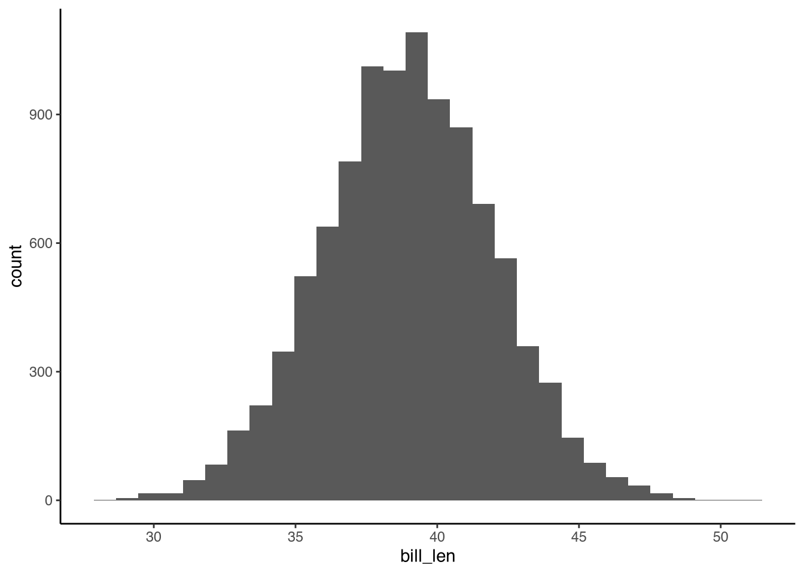
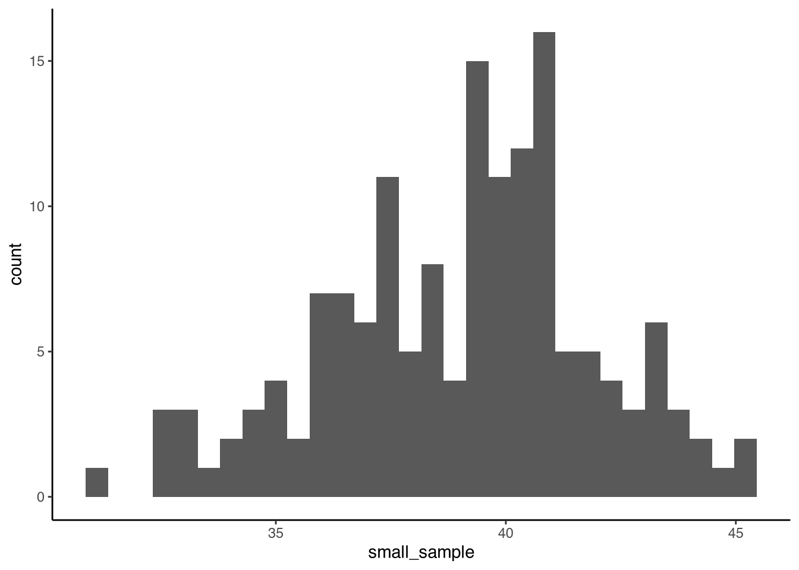

Thinking About Distributions
Lab 3
This lab will introduce aspects of statistical thinking, including how to approach a new dataset and how to think visually about distributions.
Probability Distributions üé≤
We learned in Lecture 5 that random events are determined by chance, and that uniformly random means that the chances of each outcome are equal.
A die roll is a great example of a data generating process that is uniformly random. If we rolled a die a huge number of times (e.g. 100000) we would expect that it would land on each face about an equal number of times.
In the previous lab, we saw how to use sample() to assign groups randomly and uniformly. A coin flip is one such way to generate uniformly random data for two alternatives.
Another way to say this is that the rolls are distributed evenly over all six outcomes.
Even though the random process produces outcomes with a uniform distribution, on any small number of rolls (e.g. 10) we might get back a somewhat uneven count as a result of chance.
We can also consider that many random variables will actually follow some nonuniform distribution; that is, the chances will not be equal. For example, what if an unfair die is used? Over many trials, we might observe that a particular unfair die is biased to roll one or six.
In reality, there are a variety of common distribution shapes. We introduced the flat uniform distribution, and we have come across the idea that some random variables follow a sort of bell shaped curve.
Forming a Mental Model ü߆
For today’s work, we’ll be looking at a built-in dataset having to do with penguins in Antarctica.
head(penguins) species island bill_len bill_dep flipper_len body_mass sex year
1 Adelie Torgersen 39.1 18.7 181 3750 male 2007
2 Adelie Torgersen 39.5 17.4 186 3800 female 2007
3 Adelie Torgersen 40.3 18.0 195 3250 female 2007
4 Adelie Torgersen NA NA NA NA <NA> 2007
5 Adelie Torgersen 36.7 19.3 193 3450 female 2007
6 Adelie Torgersen 39.3 20.6 190 3650 male 2007It can be worthwhile to spend some time orient ourselves when we bring up a new dataset. Take a moment to think about what each column might mean. Can we start to build a mental model of the research study?
Looking only at the head(), we saw a species column. What other species are in the rest of the table? We can use unique() to find the unique values of a vector. In this case, we find three species of penguin are reported.
unique(penguins$species)[1] Adelie Gentoo Chinstrap
Levels: Adelie Chinstrap GentooEven without knowing anything in advance about the dataset, and with only a vague prototype in mind of a penguin, we can make educated guesses for many of the variables.
Maybe your thought process was like this:
“flipper_len”… penguins each have two flippers.
the order of magnitude is in the 100s… is that inches? no. centimeters? probably millimeters.
At your R Console, enter ?penguins to learn more about this built-in object. Note that measurements for bill length, bill depth, and flipper length are reported in millimeters. Body mass is in grams. The study is observational.
Building and Testing Assumptions üîé
Drilling down into just one variable, let’s look at bill_len: the length of a penguin’s bill in millimeters.
Consider first what order of magnitude we should expect, imagining an ordinary penguin. A small multiple of ~1mm? ~10mm? ~100mm?
With a reasonable guess in mind, we can look at the data.
penguins$bill_len [1] 39.1 39.5 40.3 NA 36.7 39.3 38.9 39.2 34.1 42.0 37.8 37.8 41.1 38.6 34.6
[16] 36.6 38.7 42.5 34.4 46.0 37.8 37.7 35.9 38.2 38.8 35.3 40.6 40.5 37.9 40.5
[31] 39.5 37.2 39.5 40.9 36.4 39.2 38.8 42.2 37.6 39.8 36.5 40.8 36.0 44.1 37.0
[46] 39.6 41.1 37.5 36.0 42.3 39.6 40.1 35.0 42.0 34.5 41.4 39.0 40.6 36.5 37.6
[61] 35.7 41.3 37.6 41.1 36.4 41.6 35.5 41.1 35.9 41.8 33.5 39.7 39.6 45.8 35.5
[76] 42.8 40.9 37.2 36.2 42.1 34.6 42.9 36.7 35.1 37.3 41.3 36.3 36.9 38.3 38.9
[91] 35.7 41.1 34.0 39.6 36.2 40.8 38.1 40.3 33.1 43.2 35.0 41.0 37.7 37.8 37.9
[106] 39.7 38.6 38.2 38.1 43.2 38.1 45.6 39.7 42.2 39.6 42.7 38.6 37.3 35.7 41.1
[121] 36.2 37.7 40.2 41.4 35.2 40.6 38.8 41.5 39.0 44.1 38.5 43.1 36.8 37.5 38.1
[136] 41.1 35.6 40.2 37.0 39.7 40.2 40.6 32.1 40.7 37.3 39.0 39.2 36.6 36.0 37.8
[151] 36.0 41.5 46.1 50.0 48.7 50.0 47.6 46.5 45.4 46.7 43.3 46.8 40.9 49.0 45.5
[166] 48.4 45.8 49.3 42.0 49.2 46.2 48.7 50.2 45.1 46.5 46.3 42.9 46.1 44.5 47.8
[181] 48.2 50.0 47.3 42.8 45.1 59.6 49.1 48.4 42.6 44.4 44.0 48.7 42.7 49.6 45.3
[196] 49.6 50.5 43.6 45.5 50.5 44.9 45.2 46.6 48.5 45.1 50.1 46.5 45.0 43.8 45.5
[211] 43.2 50.4 45.3 46.2 45.7 54.3 45.8 49.8 46.2 49.5 43.5 50.7 47.7 46.4 48.2
[226] 46.5 46.4 48.6 47.5 51.1 45.2 45.2 49.1 52.5 47.4 50.0 44.9 50.8 43.4 51.3
[241] 47.5 52.1 47.5 52.2 45.5 49.5 44.5 50.8 49.4 46.9 48.4 51.1 48.5 55.9 47.2
[256] 49.1 47.3 46.8 41.7 53.4 43.3 48.1 50.5 49.8 43.5 51.5 46.2 55.1 44.5 48.8
[271] 47.2 NA 46.8 50.4 45.2 49.9 46.5 50.0 51.3 45.4 52.7 45.2 46.1 51.3 46.0
[286] 51.3 46.6 51.7 47.0 52.0 45.9 50.5 50.3 58.0 46.4 49.2 42.4 48.5 43.2 50.6
[301] 46.7 52.0 50.5 49.5 46.4 52.8 40.9 54.2 42.5 51.0 49.7 47.5 47.6 52.0 46.9
[316] 53.5 49.0 46.2 50.9 45.5 50.9 50.8 50.1 49.0 51.5 49.8 48.1 51.4 45.7 50.7
[331] 42.5 52.2 45.2 49.3 50.2 45.6 51.9 46.8 45.7 55.8 43.5 49.6 50.8 50.2Sometimes, data is missing (“NA”). This is usually because we were unable to collect a particular measurement from a participant, but it could be for a variety of reasons.
Considering on a number line the range of possible data, it looks like we have lengths of around 40mm, some in the 30s and some in the 50s. We might consider that a penguin is unlikely to have a very small bill (e.g. 20mm) or a very large bill (e.g. 60mm).
This starts to give us an idea of the distribution of bill_len, with very high and very low values tapering off as they happen only very rarely.
We could also pick some measure of central tendancy to represent the center of the data. A good first choice is the mean.
mean(penguins$bill_len, na.rm=TRUE)[1] 43.92193Missing data has consequences that affect inference and so it is something we will need to handle in the future. For now, however, na.rm=TRUE will ignore the NAs for the purposes of calculating the mean.
It seems we can describe our data as centered around 44mm.
Picking a random penguin, do we expect it to be close to this center? In other words, will any one random penguin have a bill length near to 44mm or could it be spread equally between 30mm and 50mm? This notion of spread or variability is quantified in the deviations. The average deviation is the average difference from the group average. Usually we’ll use the standard deviation, specifically.
Before calculating it, take a guess. What do we think is the average distance from 44mm?
sd(penguins$bill_len, na.rm=TRUE)Think for a moment and then click here to reveal the result.
[1] 5.459584These descriptive statistics, the range, mean, and standard deviation, are some of the tools we will continue to use to describe datasets throughout the course.
Revising Our Mental Model üìù
A sense for the shape of the distribution of bill_len is starting to take form. We have a numeric random variable that is centered at 44mm, that reaches values of 20mm or 70mm only very rarely, and in which the typical distance from the center is 5mm. It seems reasonable to consider bill_len to be a bell-shaped curve, perhaps something like this…
Implicitly, it seems like our data might be sampled from a population in which bill length is normally distributed.
To gain an understanding of what the data actually looks like, we can plot a histogram. The histogram will collect bins of data (e.g. 35-40mm, 40-45mm) and show a bar counting the number of datapoints that fell in each bin.
One reason to use a histogram instead of a plain old bar plot is that the histogram bins capture continuous data. How many times does 37.84755 occur in the dataset? Probably only once, if at all. With a histogram, we can instead get a sense for how many times any decimal number between 36 and 38 occurs.
# A 'bin width' of two seems reasonable (40-42, 42-44, 44-46).
ggplot(penguins) +
geom_histogram(aes(x=bill_len))Wait a minute! Something’s off… Why does our data have more than one peak? The plot tapers off correctly on either side, but there could be two or three curves instead of the one we expected.
Think for a moment and then click here for an explanation.
Several variables in the dataset might vary with bill length:
- Species: There are three different species of penguin in this dataset.
- Sex: The dataset includes male and female penguins. Without knowing more about penguins, is it possible a sex difference is something that causes this to vary with bill length?
- Island: Is it possible that penguins on different islands have different food sources, for instance. Is it possible that nutrition causes this to be something that varies with bill length?
Now let’s try looking at just the adélie penguins. To extract a subgroup from our dataset, we can use filter().

Image credited to Andrew Shiva on Wikimedia Commons, reproduced here under license CC-BY-SA 4.0.
_04.jpg){kind=link}
adelies <- filter(penguins, species == "Adelie")
# Note that now the dataframe 'adelies' contains only adélie penguins.
unique(adelies$species)[1] Adelie
Levels: Adelie Chinstrap Gentoo# The mean and standard deviation of the subgroup is different.
mean(adelies$bill_len, na.rm=TRUE)[1] 38.79139sd(adelies$bill_len, na.rm=TRUE)[1] 2.663405Now, we can plot a histogram of bill lengths for just the adélie penguins.
ggplot(adelies) +
geom_histogram(aes(x=bill_len))This seems a little more reasonable. Still, it is hard to tell whether that dip in the middle is due to the amount of data we have, the histogram bin width, or a factor we have not considered.
binwidth=2. The histogram bin width (40-42, 40-45, or 40-50…) can hide some of the variation. Visual inspection is not perfect.By visual inspection alone, however, and some careful thinking, we have developed preliminary mental model of the distribution of bill lengths. In future classes, we will learn to define a particular distribution and check even more rigorously whether our assumptions hold up.
Visualizing Model Distributions üìä
Keeping in mind that our sample of 152 adélies might not reflect the greater population, we could speculate that, in the adélie penguin population, bill length random variable has a distribution that is shaped like a bell-curve.
Were we to statistically model beak length, we might select a normal distribution centered at the mean, and with standard deviation representing the average difference from the mean of any one penguin.
We do not yet know how to infer the population mean and standard deviation. Here we’ll use the sample values as a guess.
Last discussion, we sampled nominal categories uniformly with the sample() function. It is also possible for us to sample random numbers directly from the normal distribution using rnorm().
# We'll need to draw a large number of random datapoints.
n <- 10000
# Sample 10,000 random numbers from the normal distribution with mean of 39 and standard deviation of 3. Call the variable bill_len.
model_penguins <- data.frame(
bill_len = rnorm(n, mean=39, sd=3)
)
# View just the top of the dataframe
head(model_penguins) bill_len
1 39.87188
2 38.58420
3 36.95602
4 43.18239
5 35.92145
6 36.25276The random numbers we have pulled look a lot like the numbers in the actual data.
Let’s visually inspect the distribution shape with a histogram of the 10000 random data points.
# Not setting the binwidth because we have so much data, the automatic value is fine.
ggplot(model_penguins) +
geom_histogram(aes(x=bill_len))
Like with the uniformly random die roll, the normally distributed random data will look different if we have few samples.
With a smaller N=152, the number of penguins we had, we can see that we don’t quite get a perfect bell-curve.
small_sample <- rnorm(152, mean=39, sd=3)
ggplot() +
geom_histogram(aes(x=small_sample))
Remember that because this data is being randomly generated, we will get a different result every time.
TipDeliverables
Today’s assignment produced many plots. Please submit screenshots of your entire RStudio screen for each of the following plots.
- The
penguinshistogram - The adélies-only histogram
- The random normal histogram with 10000 datapoints